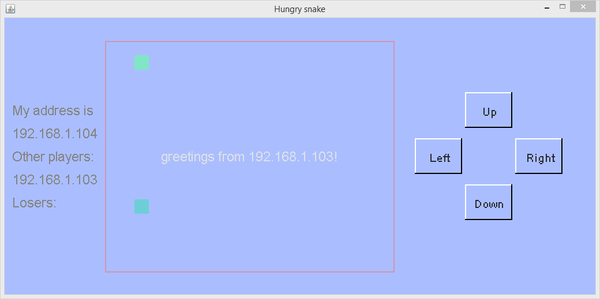
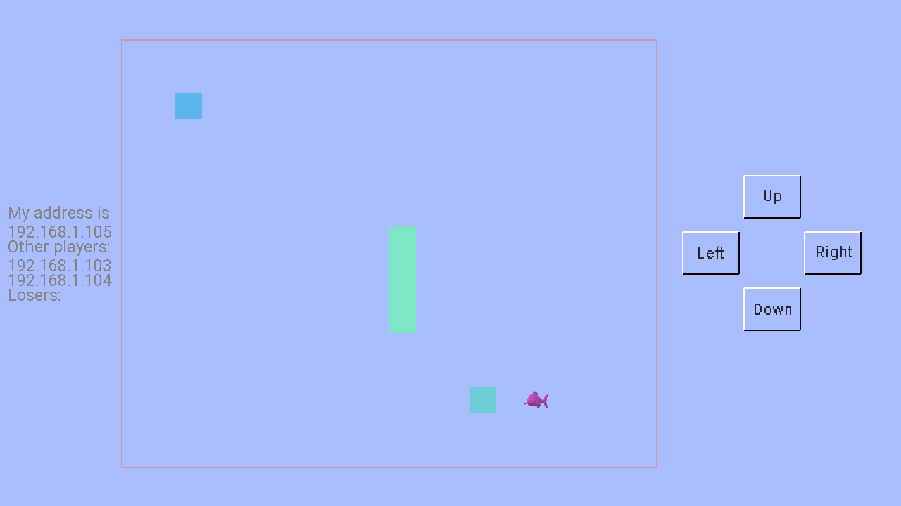

多設備多玩家的貪吃蛇遊戲是基於單玩家的貪吃蛇遊戲發展而來的。它和單玩家的貪吃蛇遊戲有相似的界面。但是和單玩家貪吃蛇遊戲不一樣的是，這個遊戲不分等級，遊戲中的所有玩家相互競爭。如果一個玩家的蛇撞到了自己或者另外一個玩家的蛇，這個玩家就輸了。為了讓遊戲比較容易玩，僅僅允許2到4個玩家參與遊戲，並且遊戲中沒有墻。
請註意，此多設備多玩家的貪吃蛇遊戲只是一個起著拋磚引玉作用的示例。它沒有考慮許多問題。比如，如何在所有玩家之間同步遊戲狀態以及如何防止死鎖。由於這些問題的存在，有時當第三名或第四名玩家加入時，遊戲可能會死鎖，因為所有玩家都在等待其他玩家的狀態消息。此外，一條蛇可能會穿過而不會撞到其他蛇的身體，這是因為有些玩家收到了其他蛇位置的滯後信息。無論如何，示例必須簡單易懂，因此並發/並行編程不是此處的主要重點。
該遊戲采用TCPIP協議在設備之間進行通信。因此，在遊戲開始時，要求玩家輸入自己設備的IP地址。MFP能夠檢測到設備使用的所有IP地址，並且它將向玩家提供IP地址列表，因此玩家僅需要從列表中選擇正確的地址。然後，玩家需要鍵入已經加入遊戲的遠程設備中的一個的IP地址。如果是第一個加入遊戲的玩家，則只需按Enter鍵即可跳過此輸入，然後遊戲就會開始。請註意，每個遊戲中最多有四個玩家，並且一個IP地址不能被多個玩家使用。
以下函數用於列出一個設備所使用的所有IP地址。
function print_all_host_tcp_addresses()
variable all_local_addresses
all_local_addresses = get_all_host_addresses("TCPIP")[0,1]
for variable index = 0 to size(all_local_addresses)[0] - 1 step 1
variable all_interface_addresses = all_local_addresses[index]
if size(all_interface_addresses[1])[0] == 0
continue
endif
print("============= " + all_local_addresses[index, 0] + " =============\n")
for variable index1 = 0 to size(all_interface_addresses)[1] - 1 step 1
variable interface_addr = all_interface_addresses[1,index1]
print(interface_addr + "\n")
next
next
endf
當遊戲開始時，第一個玩家將等待其他玩家加入。另一名玩家加入遊戲後，蛇開始在屏幕上移動。如果其中一名玩家撞到另一條蛇或自身，則該玩家將從遊戲中被踢出，而其他玩家繼續玩。一旦被踢出局，玩家將無法重新加入遊戲，直到重新開始整個遊戲。
不同的玩家設備之間相互通信是采用發送消息的方式。每一個設備都有一個客戶端和一個服務端。客戶端用於給別的設備發送消息而服務端用於接收和處理別的設備傳來的消息。以下代碼展示了如何啟動一個服務端對設備的IP地址進行監聽。
variable protocol = "TCPIP", local_address, server_address, local_interface, remote_interface, ret
variable my_address = input("My TCPIP address is:\n", "S")
local_address = my_address
local_interface = ::mfp::paracomp::connect::generate_interface(protocol, local_address)
... ...
ret = ::mfp::paracomp::connect::initialize_local(local_interface) // initialize local_interface at server side. 在服務器端初始化local_interface。
print("initialize_local server ret = " + ret + "\n")
ret = ::mfp::paracomp::connect::listen(local_interface)
print("listen ret = " + ret + "\n")
if !ret
throw "Cannot listen to " + local_interface
endif
對於客戶端，由於無需進行監聽，所以初始化代碼簡單得多，僅僅需要調用initialize_local函數即可，參見以下代碼。
variable protocol = "TCPIP", local_address, server_address, local_interface, remote_interface, ret
variable my_address = input("My TCPIP address is:\n", "S")
local_address = my_address
... ...
ret = ::mfp::paracomp::connect::initialize_local(local_interface) // initialize local_interface at client side. 在客戶端初始化local_interface。
客戶端需要和所有遠端設備的服務端建立連接。建立連接是通過調用connect函數進行。以下代碼展示了如何使用該函數。註意該函數接受網絡界面（interface）而不是IP地址作為參數。這樣一來，開發人員需要調用generate_interface函數根據遠端的IP地址創建一個遠端服務端的網絡界面。
remote_interface = ::mfp::paracomp::connect::generate_interface(protocol, server_address) // server address // 服務器地址
ret = ::mfp::paracomp::connect::connect(local_interface, remote_interface)
print("connect ret = " + ret + "\n")
variable conn = ::mfp::data_struct::array_based::get_value_from_abdict(ret, "CONNECT") // conn is the connection object // conn就是連接對象
建立連接後，客戶端可以通過調用函數send_sandbox_message將消息發送到服務端。此函數的使用方式非常復雜。它具有四種工作模式，即從沙盒向其本地主實體發送消息；從主實體或沙盒向本地沙盒發送消息；從本地沙盒或主實體向遠程主實體發送消息；以及從本地沙盒或主實體向遠程沙盒發送消息。為了完全理解此函數，開發人員需要具有MFP並行編程模型的基礎。但是，在該遊戲中，消息僅從本地主實體發送到遠程主實體，即模式3。開發人員甚至不需要知道什麽是主實體。只需將兩個參數（即連接對象和消息內容）傳遞給此函數即可，如以下代碼所示。註意，消息內容可以是任何數據值，例如字符串，整數和數組。在下面的示例中，消息是一個數組，其第一個元素為"hs-start"，第二個元素為local_address。
// now lets send start message to server. // 現在發送啟動消息給服務端 ::mfp::paracomp::connect::send_sandbox_message(conn, ["hs-start", local_address])
在服務器端，應在循環中調用函數receive_sandbox_message來處理傳入的消息。此函數有兩種工作模式。在第一種模式下，該函數在沙盒中調用。此遊戲中未使用此工作模式。遊戲使用的是第二種工作模式。在此模式下，該函數具有兩個參數。首先是從generate_interface函數返回的本地網絡界面對象。第二個參數是等待時間。0表示沒有等待時間（即立即從消息隊列返回第一條消息；如果沒有可用消息，則立即返回NULL）。小於0表示如果沒有可用消息，則該函數將被阻塞。如果大於0，此函數將最多等待參數中定義的毫秒數，直到出現消息為止；如果到時間後仍然沒有消息可用，則返回NULL。返回的消息是字典樣式數組。開發人員可以使用函數get_value_from_abdict提取其每個字段。"InterfaceInfo"字段是發件人的本地網絡界面信息，其中包括發件人的IP地址。"CallId"字段是發件人的沙盒的ID。沙盒ID與MFP的並行編程模型有關。由於此遊戲中未使用沙盒ID，因此無需管它。"Message"字段是發件人發送的消息的內容。該代碼段如下所示。
variable msg = receive_sandbox_message(server_local_interface, -1) // block mode.阻塞模式。 ... ... if msg != null // connect_id is client side connect id. // connect_id是遠程端的connect id。 variable interface_info = ::mfp::data_struct::array_based::get_value_from_abdict(msg, "InterfaceInfo") variable connect_id = ::mfp::data_struct::array_based::get_value_from_abdict(interface_info, "LocalAddress") variable call_id = ::mfp::data_struct::array_based::get_value_from_abdict(msg, "CallId") variable msg_data = ::mfp::data_struct::array_based::get_value_from_abdict(msg, "Message")
當一條蛇撞上其他蛇或其本身時，蛇的玩家將失敗並必須退出遊戲。失敗的玩家與其他玩家之間的連接必須斷開。這是通過在客戶端調用函數close_connection來實現的。但是在執行此操作之前，失敗的玩家會向其他玩家發送"hs-ilose"消息，告知玩家失敗退出的消息。該代碼段如下所示。
for variable idx = 0 to size(other_players)[0] - 1 step 1 variable conn = other_players[idx].connectObj if and(other_players[idx].state != -1, conn != null) // now lets send moving or failure message to server. // 現在發送移動或者失敗的消息給服務端 if my_state == -1 // after the local player receives 'ilose' message, it sends 'iquit' to all remote players // 當本地玩家收到'ilose'消息之後，它發送'ilose'消息給其他遠程玩家 send_sandbox_message(conn, "hs-ilose") close_connection(conn) else ... ... endif endif next
請註意，關閉連接的另一種方法是通過調用close_local函數從服務端關閉。但是，由於關閉連接後客戶端將不會被通知到，因此未使用此方法。否則的話，如果客戶端在連接關閉後發送消息，則函數調用將失敗，並且整個程序將終止。
遊戲的代碼和輔助文件已經和其他示例遊戲一起被打包。請點擊此處下載壓縮包。解壓縮之後將game_examples目錄拷貝到和JMFPLang.jar文件同一個目錄的scripts文件夾中，如下圖所示。

遊戲的腳本代碼源文件（即oo_hungry_snake_parallel.mfps）位於game_examples文件夾的hungry_snake_parallel子文件夾中。它的輔助文件也位於同一文件夾中。要啟動該示例，只需啟動JMFPLang.jar文件，然後在命令行中運行gdi_test::game_test::oo_hungry_snake_parallel::run()。玩家也可以轉至JMFPLang.jar所在的文件夾，然後通過鍵入java -jar JMFPLang.jar -f scripts\game_examples\hungry_snake_parallel\oo_hungry_snake_parallel.mfps命令在Windows命令提示符或者Powershell或Linux bash中運行腳本。
借助MFP語言對Android和安裝有JAVA的PC平臺的雙重支持，本遊戲既可以在安裝有JAVA的PC上運行，也可以在安卓設備上以應用或者獨立腳本的方式運行。以下是該遊戲在兩個不同的平臺上運行的截屏。上面的屏幕截屏是在Windows+JVM平臺上的運行效果，下面的屏幕截屏是在Android平臺上的運行效果。

